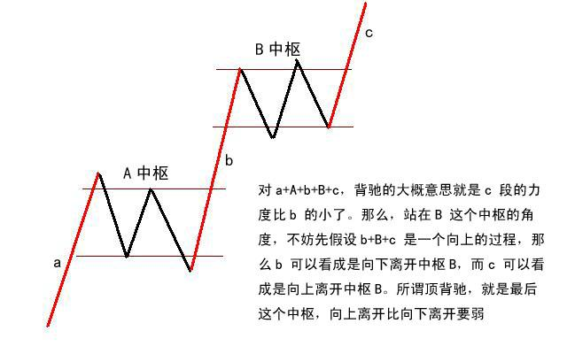
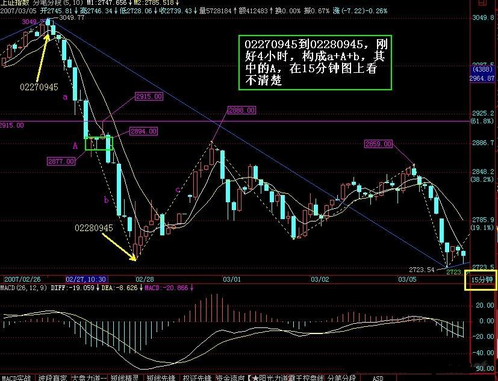
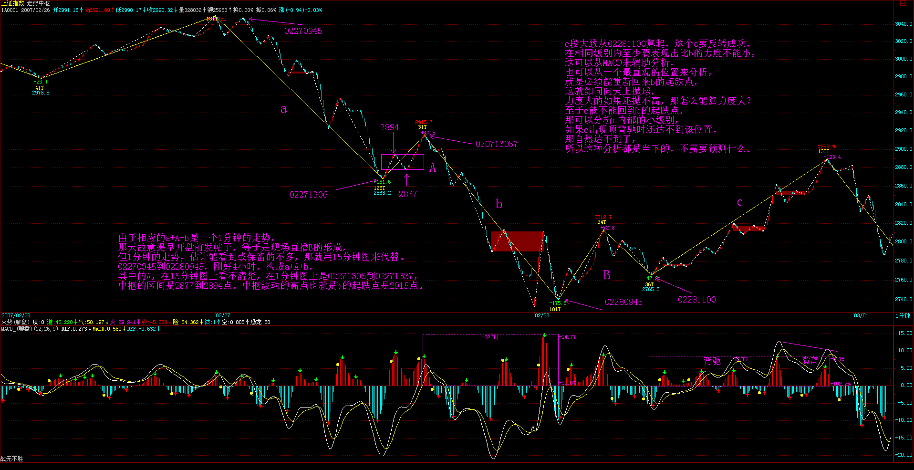
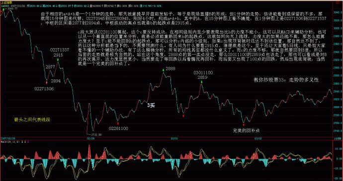
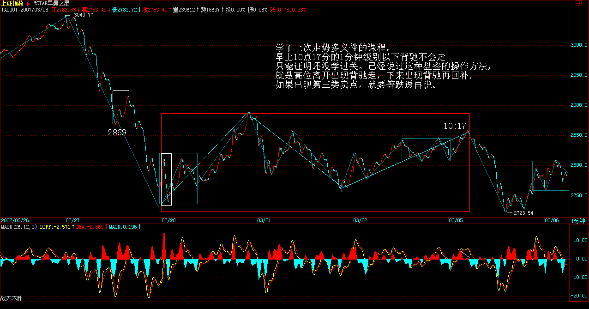

|
 |
教你炒股票33：走势的多义性
(2007-03-02 15:20:37)
如果市场都是标准的a+A+b+B+c，A、B的中枢级别一样，那这市场也太标准、太不好玩了。市场总有其复杂的地方，使得市场的走势呈现一种多义性，就好象诗词中文字的多义性一样。如果没有多意义性，诗词都如逻辑一样，那也太没意思了。而所有走势的多义性，都与中枢有关。
例如，5分钟级别的中枢不断延伸，出现9段以上的1分钟次级别走势。站在30分钟级别的中枢角度，3个5分钟级别的走势重合就形成了，而9段以上的1分钟次级别走势，每3段构成一个5分钟的中枢，这样也就可以解释成这是一个30分钟的中枢。这种情况，只要对中枢延伸的数量进行限制，就可以消除多义性，一般来说，中枢的延伸不能超过5段，也就是一旦出现6段的延伸，加上形成中枢本身那三段，就构成更大级别的中枢了。
另外一种多义性，是因为模本的简略造成的。不同级别的图，其实就是对真实走势不同精度的一种模本，例如，一个年线图当然没有1个分笔图的精确度高，很多重要的细节都不可能在大级别的图里看到。而所谓走势的级别，从最严格的意义上说，可以从每笔成交构成的最低级别图形不断按照中枢延伸、扩展等的定义精确地确认出来，这是最精确的，不涉及什么5分钟、30分钟、日线等。但这样会相当累，也没这个必要。用1分钟、5分钟、30分钟、日线、周线、月线、季线、年线等的级别安排，只是一个简略的方式，最主要是现在可以查到的走势图都是这样安排的，当然，有些系统可以按不同的分钟数显示图形，例如，弄一个7分钟的走势图，这都完全可以。这样，你完全可以按照某个等比数列来弄一个级别序列。不过，可以是可以，但没必要。因为，图的精确并没有太大的实质意义，真实的走势并不需要如此精确的观察。当然，一些简单的变动也是可以接受的，例如去掉30分钟，换成15分钟和60分钟，形成1分钟、5分钟、15分钟、60分钟、日线、周线、月线、季线、年线的级别安排，这也是可以的。
虽然没有必要精确地从最低级别的图表逐步分析，但如果你看的图表的缩放功能比较好，当你把分笔图或1分钟图不断缩小，这样，看到的走势越来越多，而这种从细部到全体的逐步呈现，会对走势级别的不断扩张有一个很直观的感觉，这种感觉，对你以后形成一种市场感觉是有点帮助的。在某个阶段，你可能会形成这样一种感觉，你如同站在重重叠叠的走势连绵中，而当下的趋向，仿佛照亮着层层叠叠的走势，那时候，你往往可以忘记中枢之类的概念，所有的中枢，按照各自的级别，仿佛都变成大小不同的迷宫关口，而真正的路只有一条，而你的心直观当下地感应着。说实在，当有了这种市场清晰的直觉，才算到门口了。那时候，就如同看一首诗，如果还从语法等去分析，就如同还用中枢等去分析一样，而真正的有感觉的读者，是不会计较于各种字句的纠缠的，整体的直观当下就呈现了，一首诗就如同一自足的世界，你当下就全部拥有了。市场上的直观，其实也是一样的。只要那最细微的苗头一出来，就当下地领悟了，这才算是对市场走势这伟大诗篇一个有点合格的的阅读。
在一名能充分直观的阅读者眼里，多义性是不存在的，而当这种最明锐的直觉还没出现时，对走势多义性的分析依然必要，因此也必须继续。换句话说，如果玩不了超逻辑的游戏，那只能继续在逻辑的圈子里晃悠。除了上面两种多义性，还有一种有实质意义的多义性，也就是走势分析中的多种合理释义，这些释义都符合理论内在的逻辑，因此，这种多义性反而不是负担，而是可以用多角度对走势进行一个分析。
例如，对a+A+b+B+c，a完全可以有另一种释义，就是把a看成是围绕A这个中枢的一个波动，虽然A其实是后出现的，但不影响这种看法的意义。同样c也可以看成是针对B的一个波动，这样整个走势其实就简化为两个中枢与连接两者的一个走势。在最极端的情况下，在a+A+b+B+c的走势系列类型里，a和c并不是必然存在的，而b完全可以是一个跳空缺口，这样，整个走势就可以简化为两个孤零零的中枢。把这种看法推广到所有的走势中，那么任何的走势图，其实就是一些级别大小不同的中枢，把这些看成不同的星球，在当下位置上的星球对当下位置产生向上的力，当下位置下的产生向下的力，而这些所有力的合力构成一个总的力量，而市场当下的力，也就是当下买卖产生的力，买的是向上的力，卖的是向下的力，这也构成一个合力，前一个合力是市场已有走势构成的一个当下的力，后者是当下的交易产生的力，而研究这两种力之间的关系，就构成了市场研究的另一个角度，也就是另一种释义的过程。这是一个复杂的问题，以后会陆续说到，算是高中的课程了。
现在先别管什么力不力的，可以从纯粹中枢的角度对背驰给出另外的释义。对a+A+b+B+c，背驰的大概意思就是c段的力度比b的小了。那么，站在B这个中枢的角度，不妨先假设b+B+c是一个向上的过程，那么b可以看成是向下离开中枢B，而c可以看成是向上离开中枢B。所谓顶背驰，就是最后这个中枢，向上离开比向下离开要弱，而中枢有这样的特性，就是对无论向上或向下离开的，都有相同的回拉作用，既然向上离开比向下离开要弱，而向下离开都能拉回中枢，那向上的离开当然也能拉回中枢里，对于b+B+c向上的走势，这就构成顶背驰，而对于b+B+c向下的走势，就构成底背驰。对于盘整背驰，这种分析也一样有效。其实，站在中枢的角度，盘整背驰与背驰，本质上是一样的，只是力度、级别以及发生的中枢位置不同而已。

同样，站在纯中枢的角度，a+A+b+B，其中B级别大于A的这种情况就很简单了，这时候，并不必然地B后面就接着原方向继续，而是可以进行反方向的运行。例如，a+A+b+B是向下的，而a+A+b其实可以看成是对B一个向上离开的回拉，而对中枢来说，并没要求所有的离开都必须按照上下上下的次序，一次向上的离开后再一次向上的离开，完全是被允许的，那站在这个角度，从B直接反转向上，就是很自然的。那么，这个反转是否成功，不妨把这个后续的反转写成c，那么也只要比较一下a+A+b与c这两段的力度就可以，因为中枢B对这两段的回拉力度是一样的，如果c比a+A+b弱，那当然反转不成功，也就意味着一定要重新回到中枢里，在最强的情况下也至少有一次回拉去确认能否构成一个第三类买点。而a+A+b与c的力度比较，与背驰的情况没什么分别，只是两者的方向不同而已。如果用MACD来辅助判别，背驰比较的黄白线和柱子面积都在0轴的一个方向上，例如都在上面或下面，而a+A+b与c就分别在不同的方向上，由于这，也不存在黄白线回拉的问题，但有一点是肯定的，就是黄白线至少要穿越一次0轴。这几天大盘的走势，就对这种情况有一个最标准的演示。简略分析一下。
（买卖）
由于相应的a+A+b是一个1分钟的走势，那天故意提早开盘前发帖子，等于是现场直播B的形成，但1分钟的走势，估计能看到或保留的不多，那就用15分钟图来代替。02270945到02280945，刚好4小时，构成a+A+b，其中的A，在15分钟图上看不清楚，在1分钟图上是02271306到02271337，中枢的区间是2877到2894点，中枢波动的高点也就是b的起跌点是2915点。c段大致从02281100算起，这个c要反转成功，在相同级别内至少要表现出比b的力度不能小，这可以从MACD来辅助分析，也可以从一个最直观的位置来分析，就是必须能重新回来b的起跌点，这就如同向天上抛球，力度大的如果还抛不高，那怎么能算力度大？至于c能不能回到b的起跌点，那可以分析c内部的小级别，如果c出现顶背驰时还达不到该位置，那自然达不到了，所以这种分析都是当下的，不需要预测什么。有人问为什么要看2915点，道理就是这个。至于还让大家看5日线，只是怕大家看不懂的一个辅助办法，有了这么精确分析，所有的均线其实都没什么意义了。而c的力度不够，那就自然要回到B里，所以后面的走势就是极为自然的。站在这个角度，2888点的第一卖点没走，那么03011100的2859点也该走了，那也可以看成是对B的再次离开，这力度显然更小，当然要走了等回跌以后看情况再回补，而后面又出现了100点的回跌，然后出现底背驰，当然就是一个完美的回补点了。



（买卖）
总体围绕中枢的操作原则很简单，每次向下离开中枢只要出现底背驰，那就可以介入了，然后看相应回拉出现顶背驰的位置是否能超越前面一个向上离开的顶背驰高点，不行一定要走，行也可以走，但次级别回抽一旦不重新回到中枢里，就意味着第三类买点出现了，就一定要买回来。而如果从底背驰开始的次级别回拉不能重新回到中枢里，那就意味着第三类卖点出现，必须走，然后等待下面去形成新的中枢来重复类似过程。围绕中枢的操作，其实就这么简单。当然，没有本ID的理论，是不可能有如此精确的分析的，就像没有牛顿的理论，人们只能用神话去讲述一切关于星星的故事。
不过，这些分析都是针对指数的，而个股的情况必须具体分析，很多个股，只要指数不单边下跌，就会活跃，不爱搭理指数，所以不能完全按指数来弄。其实。对于指数，最大的利益在期货里。不过，期货的情况有很大的特殊性，因为期货是可以随时开仓的，和股票交易凭证数量的基本稳定不同，所以在力度分析等方面有很多不同的地方，这在以后再说.
每日解盘(2007-03-02 15:21:15 )
缠中说禅： 缠中说禅 2007-03-02 15:34:18
[匿名] 小鸟 2007-03-02 15:28:49
请问妹妹：
某级别走势的结束是由什么背驰造成的呢？
我怎么觉得既有次级别的趋势背驰也有盘整背驰呀？
另外，某级别的盘整背驰是由次级别的趁势背驰造成的吗？
--
简单说，任何走势的结束，一定由于背驰，某级别的背驰，至少结束该级别的走势，这是没问题。但不一定就由于次级别的背驰，否则研究a`+B这些就没意义了。
缠中说禅 2007-03-02 15:37:11
[匿名] angel 2007-03-02 15:31:08
==技术只是皮毛，是人用技术而不是技术用人，不成为一个人，技术越高，死得越惨。来这里光学了技术，那是最无聊的事情了。
请问您想让我们来这里学什么呢?不是技术还会有什么?
--
如果你只看到技术，那就先学技术吧，人只能先学他看到的东西。等你看到更多东西了，或者需要更多东西了，那就继续找非技术的。
缠中说禅 2007-03-02 15:46:02
[匿名] 哈哈 2007-03-02 15:41:30
禅姐的意思是有些走势也有非技术的东西在里面吗？是不是后面的课程啊？
==
只要是超过1个人的交易，不存在非技术的走势。
缠中说禅 2007-03-02 15:59:54
[匿名] 面首甲 2007-03-02 15:52:41
缠姐，这课写得太好了！解了我不少疑点。
能不能讲一下中枢的实质？和一般意义的阻力位，支撑位有什么关系？
按照缠姐的理论，这段时间对大盘的节奏掌握得很好。所以没亏钱。
但是对个股的没掌握好，所以也没赚钱。今天买入的低价股都在调整，没有表现。
==
（买卖）
选股票要找好买点，在牛市里，第三类买点的爆发力是最强的，例如日线上的，如果实在找不到，就找30分钟上的。你可以把一些有潜力的板块，价位不高的，周线还没拉升当成自选，弄个100、几十只的，然后每天在这些股票里选买点，这样就不会太累了。节奏弄好了，基本可以达到出了马上又可以买别的地步，这样资金利用率就高的，散户资金不大，就要发挥优势，没必要参与大级别的调整。把已经走坏的挑出你的股票池，不断换入有潜力的新板块，这样不断下去，一定会有大成果的。
缠中说禅 2007-03-02 16:01:38
[匿名] 小鸟 2007-03-02 15:59:54
三类买点是不是只要没触到中枢的最高点，即使触到中枢波动的最高点也算是吧？
==
次级别不跌回中枢里面就是，但能不跌回最高点那自然是最强的。
缠中说禅 2007-03-02 16:04:12
[匿名] 请教大势 2007-03-02 15:57:58
深圳本地股的活跃告一段落了？？还是会有一、两周的活跃期？
这两天深圳本地股的成交量这么大，是行情的结束吗？
==
（买卖）
板块要轮动的，不可能永远一个板块，否则今天军工怎么起来？如果是散户，就要选好几个板块，有卖点就先卖，轮着吵，这样效率才高，当然还可以坚持一个板块，不断弄短差，其实这样的效率也很高。
缠中说禅 2007-03-02 16:05:22
[匿名] 满目山河 2007-03-02 16:03:52
选股票要找好买点，在牛市里，第三类买点的爆发力是最强的，例如日线上的，如果实在找不到，就找30分钟上的。你可以把一些有潜力的板块，价位不高的，周线还没拉升当成自选，弄个100、几十只的，然后每天在这些股票里选买点，这样就不会太累了。节奏弄好了，基本可以达到出了马上又可以买别的地步，这样资金利用率就高的，散户资金不大，就要发挥优势，没必要参与大级别的调整。把已经走坏的挑出你的股票池，不断换入有潜力的新板块，这样不断下去，一定会有大成果的。
=======
?这样当然好，可是把握不好全是些似是而非的东西，到时候节奏容易乱啊。
==
当然前期是你必须把理论掌握好，但没有实践，理论的掌握是很难的。纸上谈兵没用的。
缠中说禅 2007-03-02 16:13:17
小糊小舞 2007-03-02 16:07:41
请问楼主，就是B后面的这个c走势，不管它怎么走是否只要最后没有形成和B同级别的中枢，那么B这个星球将继续发挥作用？
==
对，准确说，至少是同级别且不重叠的，当然，比他大的也可以。原来的不是没作用，而是归入一个大的中枢系统里发挥作用了，这中枢系统层层的关系，以后会说到。对于一般的操作来说，特别是短线，弄好一个中枢就很可以了。
缠中说禅 2007-03-02 16:17:53
[匿名] 请教 2007-03-02 16:12:01
缠中说禅盘整：在任何级别的任何走势中，某完成的走势类型只包含一个缠中说禅走势中枢，就称为该级别的缠中说禅盘整
缠中说禅走势中枢：某级别走势类型中，被至少三个连续次级别走势类型所重叠的部分。
请教：盘整属于走势类型的一种，要靠中枢来定义，而中枢要靠走势类型来定义，该怎样理解？
哪位哥哥姐姐帮解释一下
==
递归，最小级别的中枢用三根K线就完了。然后用类似an+1=f(an）的形式进行下去就可以。至于，盘整、趋势这些概念，其实没有也可以的，只是将就大家的习惯，唯一有效的就是中枢的概念，其他都是多余的。
缠中说禅 2007-03-02 16:19:05
[匿名] 小鸟 2007-03-02 16:17:10
一旦出现6段的延伸，加上形成中枢本身那三段，就构成更大级别的中枢了。
这算什么？量变引起质变吗？
你说过盘整+盘整还是盘整，那如果一个30中枢的三段5分钟走势全部是分别只有一个5分钟中枢，那不就是盘整+盘整+盘整，还是一个5分钟中枢嘛，是不是因为你这句话的原因，就变成30分钟中枢了呢？
==
盘整+盘整还是盘整，但加多了就是级别大的盘整，这没有什么问题。盘整还有一个级别的问题。
缠中说禅 2007-03-02 16:25:46
对不起，周末再谈股票，本ID就有点不舒服，人生苦短，不能总是股票，本ID要下了，准备到处去撒点野，周日回来一起探讨唱歌的问题。
先下，再见。
每日解盘(2007-03-05 11:56:42
缠中说禅： 
现在平安成了汉奸的武器，不仅在香港作空，在这里也不断打压。而今天有关查资金的消息，对心理面的修复不利。其实这种走势，只有不断上下的震荡，才能更好地清洗。让大众恐惧心理多点释放，将有利于以后行情的展开。
|
|
|
|